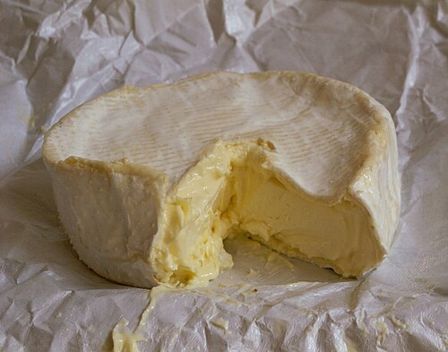

Soft cheese is an umbrella term for many cheese types that may contain hidden risks. The major concern is its repeated association with Listeria. 1 2
Normal spoilage cues linked to it, like soft texture, surface moisture, or strong smell, are hard to apply; and some groups, especially pregnant people, face much higher stakes. 1
It is nutritious in dairy protein and fat. It is sold as a premium food and often consumed with other raw products, so the source of Listeria may be hard to identify. 1 2